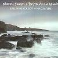

Celtic Lyrics Corner > Artists & Groups > Mackenzie > Notes From A Hebridean Island
|  |
Notes From A Hebridean Island
(2001) |
| Tracks : |
1. St Kilda's Wedding/A St Kilda's Dance
2. Anna Bheag (Wee Anna) 3. MacPhee's Reel/Marion & Donald/Tail Toddle 4. Ba Mo Leanabh (O My Baby) 5. Barbara's Jig/Kenny MacDonald's Jig/Joseph MacDonald's Jig 6. A Fisherman's Song For Attracting Seals 7. Blue Ribbon, Scottish Measure 8. The Battle Of Waterloo/The Wee Highland Laddie 9. Skye Dance/Harris Dance 10. The Mermaid's Song 11. Chaidh Mi'n Traigh A Déanamh Maoraich (I Went To The Beach To Collect Shellfish)/Co Bheir Mi Leam (Who Shall I Take With Me?) 12. Rory Dall's Sister's Lament 13. Iain Ruaidh's Lament (Tuireadh Iain Ruaidh) 14. Looking South Over The Border |